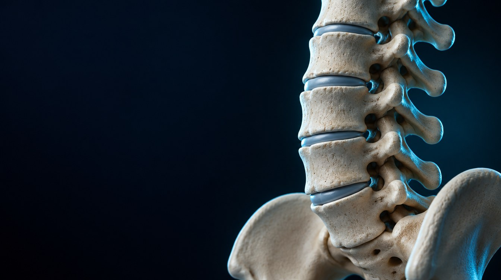

TRATTARE · FORO ISCHIATICO
Posturologia e decompressione spinale
Lavoro posturale globale e decompressione spinale all’interno di un percorso definito dopo la valutazione.
Richiedi informazioniIL NOSTRO APPROCCIO
Uno sguardo dedicato alla colonna.
- Valutazione del rachide
- Postural Bench Tecnobody
- Decompressione con BTL
Due strumenti, un percorso individuale
La proposta del centro integra Postural Bench di Tecnobody, per il lavoro sulle catene muscolari, e il lettino BTL per la decompressione spinale. La scelta e l’impiego degli strumenti dipendono dalla valutazione professionale.
Il lavoro con il lettino BTL
Il lettino consente di applicare trazioni controllate e progressive. Parametri e modalità vengono stabiliti in base alla persona: il trattamento non è automatico né uguale per tutti.
Prima di iniziare
Il professionista raccoglie la storia clinica e considera la regione interessata, i sintomi e gli eventuali accertamenti. Valuta l’appropriatezza del trattamento, le possibili controindicazioni e l’eventuale necessità di un approfondimento specialistico.
IL TUO PERCORSO INIZIA QUI
Parliamone insieme.
Castiglione del Lago, Tavernelle e Città della Pieve.
Contattaci per conoscere disponibilità e modalità del servizio.